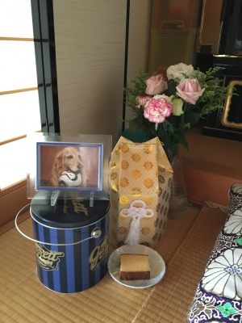
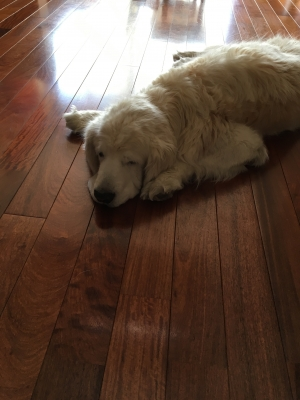

ひながいない 2
日曜日の夕方から今日までの5日間、
この10年間で一番泣いたんじゃないかと思うくらい泣きました。
・・・父が他界した時よりも、もしかして泣いたかも(汗)。
部屋に連れてきて、マットの上に寝かせてあげたひなが
あんまり穏やかな顔で、ホントに眠っているみたいだったので、
そのまま取っておきたいなんて、思ったりしましたが・・・
月曜日のお昼にペットの葬儀屋さんに来ていただいて、
家の前で火葬していただきました。
今までずっとお世話になった「るい動物病院」の先生が、
午前中にひなに会いに来てくれました。
本当なら、かわいがってくれた皆さんに
会いに来てもらうべきだったかもしれませんが、
誰かにひながお星様になったことを知らせるための
電話も、メールもすることは出来ませんでした。

昨日になってハルが、サッカーから帰って来て
ひなを見つけた時のことを話してくれました。
私が帰った時は芝生の上に横たわった状態だったひなですが、
ハルとダンナが帰った時は、「ふせ」の姿勢でうずくまっていたそうです。

↑
ちょうどこんな感じでしょうか。
だとしたら、
きっと苦しくてもがいたりということはなかったんじゃないかな
と思えて、ちょっとだけ楽になりました。
ひながこの世にさよならする時に、一緒にいてあげられなかったことが
悲しくて、寂しくて、痛かっただろうか、苦しかっただろうかと、
毎日一人っきりで逝かせてしまった事を悔いていたからです。
まだひなに「ありがとう」とは言えていません。
ごめんね。ごめんね。ばっかりです。
冷蔵庫を開ければひなが食べていたものがいっぱい入っているし、
ウッドデッキを眺めればひなが使っていたスロープが目に入ります。
でも、ひながいない。ひなだけがそこにいないの。
日常生活はそれまでと変わりなく続いていくのに
すべてが変わってしまったように感じます。
コメント(2)
コメントを残すのは初めてですが、２年ほど前
からブログは拝見させて頂いてました。
ひなちゃんの、もふもふした感じ、お目目が垂れ目で優しいお顔が大好きでした。
お空に行ってしまって本当に寂しいです。
我が家の風太も今年の３月１日に１４歳と１１カ月で闘病の末、お空に行ってしまいました。
４ヶ月以上たっても、まだ悲しいです。
ひなママさんと一緒で、いまだに『ごめんね』ばかりです・・・。
納得のいくお別れって少ないように思えます。
でも、ひなちゃんも幸せだったと思います。
食事の管理に、専用スロープ、針治療など
至れり尽くせりで凄いなと思って見てました。
そのおかげで、とても長生きできて
お顔も穏やかだったのだと思います。
なので、ひなママさんあまりご自分を責めないでくださいね。
私も未だに風太が飲んでいたサプリなど捨てれません。
じっくり、ゆっくり時間を掛けて自分のタイミングでお別れしたいと思っています。
ひなちゃんのご冥福を心よりお祈りいたしております。
コメントありがとうございました。
ひながお星さまになってからブログの更新もなかなかする気が起きず、コメントいただいたことも気がつきませんでした。
いつも後悔だけはしたくないと思ってやってきましたが、世の中思うようにはいかないものです。
風太ははさまも、同じように最愛の子を亡くされたということで、私の状況は言わなくてもきっと分かっていただけると思います。
時間が解決してくれるだろう事は、頭では理解できても、心がついてこない状態なんですよね。
でも、私もいつかは「ありがとう」って、ひなに言ってあげたいです。私たち家族の生活を何倍にも豊かなしてくれた最愛のムスメに心からありがとうが言える日が来ることを信じています。